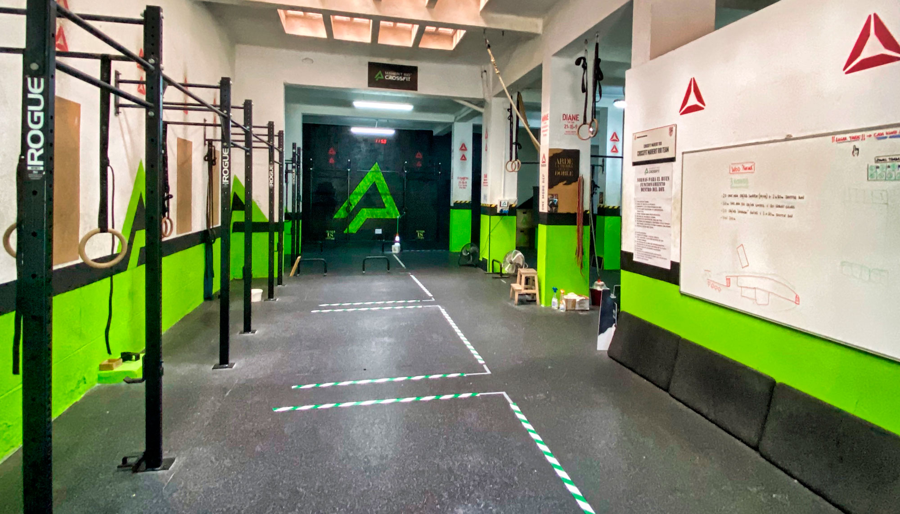

Crosstraining
Clases dirigidas de alta intensidad con movimientos funcionales variados. Grupos reducidos con corrección técnica constante.
Saber mas
Más de 400 m2 de box diáfano junto a Casa de Campo y Madrid Rio. Clases reducidas con monitores profesionales. Entrenamiento interior y exterior. Primera clase de prueba gratuita.

Crosstraining Maherit Rio nació con la idea de crear un entorno de trabajo donde las personas disfruten al 100% de cada sesión y terminen con una sonrisa y una agradable sensación de bienestar tras un entrenamiento intenso.
La ubicación junto a Casa de Campo y Madrid Rio permite combinar el entrenamiento interior con sesiones al aire libre cuando el tiempo acompaña.
Diferentes formatos de entrenamiento para que elijas el que mejor se adapta a tu nivel y objetivos.
Clases dirigidas de alta intensidad con movimientos funcionales variados. Grupos reducidos con corrección técnica constante.
Saber masEntrena por tu cuenta en el box con acceso a todo el equipamiento. Ideal para seguir tu propia programación o reforzar movimientos.
Ver horariosAprovecha la ubicación privilegiada junto a Madrid Rio y Casa de Campo para realizar WODs al aire libre.
Ver el boxUn gran box diáfano dividido en varias zonas de entrenamiento con equipamiento profesional completo: barras olímpicas, kettlebells, cajones pliométricos, remos, assault bikes, atlas stones y mucho más.
Vestuarios con duchas y todo lo necesario para que vengas a entrenar directamente desde el trabajo o antes de empezar tu jornada.
Conocer el box
Un entorno donde disfrutar al 100% de cada sesión y terminar con una sonrisa y una agradable sensación de bienestar.
4.8 sobre 5 en Google Maps con 111 opiniones verificadas.
Muy buen box para entrenar.
Los ejercicios son muy variados. Los entrenadores son de 10.
Llevo 3 años y el ambiente y los entrenadores te motivan a dar lo mejor de ti.
La ubicación es excelente, Madrid Rio, y el ambiente muy sano. Recomendable 200%.
El mejor box que he conocido.
Llevo muchos años entrenando con ellos. Monitores profesionales y gran equipamiento.

No necesitas experiencia previa ni equipamiento especial para empezar. Ven a conocer el box, prueba una clase y decide con calma. Los monitores adaptan cada sesión a tu nivel.
Las clases se organizan en grupos reducidos para garantizar una corrección técnica individualizada y evitar errores de ejecución.
No. Crosstraining Maherit Rio acepta personas de cualquier nivel. Los monitores adaptan cada sesión a tu capacidad y objetivos, con clases reducidas para corregir la técnica de forma individualizada.
Si. Ofrecen una clase de prueba gratuita y sin compromiso para que conozcas las instalaciones, a los entrenadores y la dinámica del box.
En la Calle Aniceto Marinas 26, 28008 Madrid, junto a Madrid Rio y Casa de Campo. Zona Arguelles/Moncloa-Aravaca.
Lunes, miércoles y viernes hay clases por la mañana (10:00-13:00) y por la tarde (17:00-22:00). Martes y jueves solo tardes (17:00-22:00). Sábados de 11:00 a 14:00. Domingos cerrado.
Si. La ubicación privilegiada junto a Madrid Rio y Casa de Campo permite realizar WODs al aire libre cuando el tiempo acompaña.
Estamos en pleno Madrid Rio, junto a Casa de Campo. Contacta con nosotros por teléfono, WhatsApp o email.